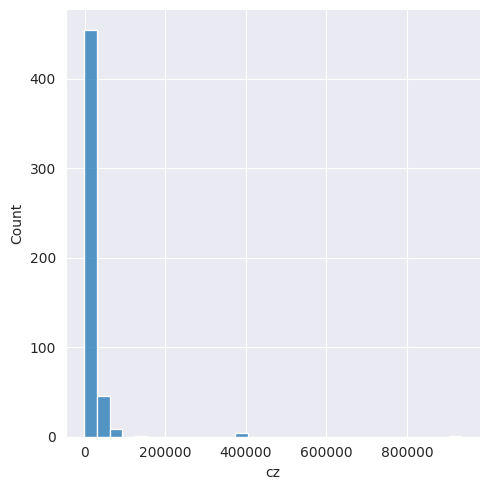
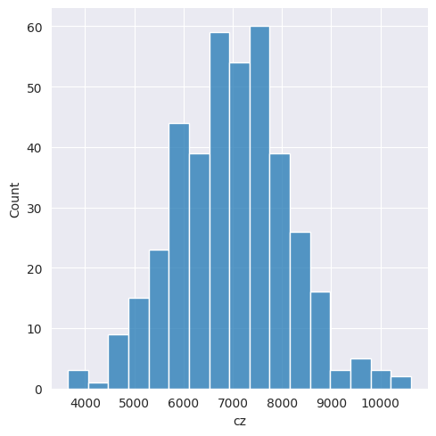
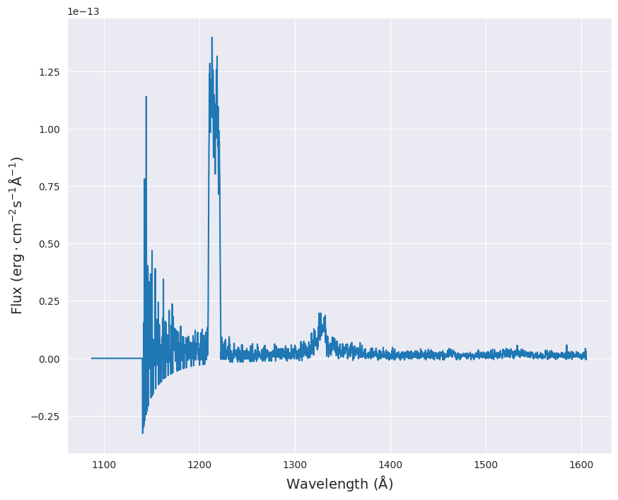
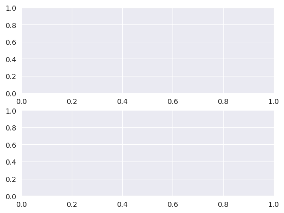

Abell 1656: the Coma Cluster of Galaxies __ Simple Spectral Access Protocol (SSA)#
Stefania Amodeo¹, Thomas Boch¹, Caroline Bot¹, Giulia Iafrate², Katharina A. Lutz¹, Manon Marchand¹, Massimo Ramella², and Jenny G.Sorce³⁴⁵
Université de Strasbourg, CNRS, Observatoire Astronomique de Strasbourg, UMR 7550, F-67000, Strasbourg, France
INAF - Osservatorio Astronomico di Trieste
Univ. Lille, CNRS, Centrale Lille, UMR 9189 CRIStAL, F-59000 Lille, France
Université Paris-Saclay, CNRS, Institut d’Astrophysique Spatiale, 91405, Orsay, France
Leibniz-Institut für Astrophysik (AIP), An der Sternwarte 16, D-14482 Potsdam, Germany
The original form of this tutorial authored by Massimo Ramella & Giulia Iafrate can be found on the EURO-VO tutorials page. The version here is an adaptation into a jupyter notebook by the Strasbourg astronomical Data Center (CDS) team.
Introduction#
The Coma Cluster is an ensemble of over 1000 galaxies that takes its name from the constellation Coma Berenices.
The goals of this notebook tutorial are to:
examine the Coma cluster of galaxies (Abell 1656) using services and data from the virtual observatory within a jupyter notebook. This allows a quick evaluation of the mean redshift and velocity dispersion of the cluster. Both measurements are important to study the evolution of galaxy clusters. To do so we use redshifts and photometry (Petrosian r magnitude) from the Sloan Digital Sky Survey (SDSS) and then add redshifts from the Cluster And Infall Region Nearby Survey (CAIRNS) (Rines et al. 2003). This improves the completeness of the redshift sample,
research the Mikulski Archive for Space Telescopes (MAST) for Hubble Space Telescope (HST) spectra in the region of the Coma cluster,
download a spectrum from MAST and do a quick analysis of the redshift of the emission lines in the spectrum.
# Astronomy tools
from astropy import units as u
from astropy.coordinates import SkyCoord
from astropy.io import fits
from astropy.table import vstack
# Access astronomical databases
import pyvo
from astroquery.simbad import Simbad
from astroquery.vizier import Vizier
from astroquery.xmatch import XMatch
# Sky visualization
from ipyaladin import Aladin
# For plots
import matplotlib.pyplot as plt
import seaborn as sns
# Data handling
import numpy as np
import specutils.analysis as spec_ana
from scipy.optimize import curve_fit
from specutils import SpectralRegion, Spectrum1D
Step #1: Exploration of the Coma cluster#
Display the region of Abell 1656 in Aladin lite#

We start by displaying the Coma Cluster in an Aladin Lite widget. We will display DSS2 color images (survey='P/DSS2/color') centered on Abell 1656 (target='A1656') and set the field of view to \(0.7^\circ\) (fov=0.7).
At this distance, this field of view corresponds to approximately 1Mpc: this is large enough to look at the cluster.
If you are using Jupyter lab you can open a second python3 notebook. On this new notebook click the “Python 3” button in the top-right corner of this notebook to switch kernel. A new window will pop up and you can then select this notebook (i.e. “Abel1656…”) as a kernel. This will link the two notebooks such that they see the same variables. You may use the second notebook to look at Aladin Lite widget while doing the analysis in this notebook.
aladin = Aladin(target="A1656", fov=0.7, survey="P/DSS2/color")
aladin
You can already see galaxies composing the cluster, and a few stars, like for example the bright HD112887 star (click for a surprise Simbad query). But there is more! As with any Aladin Lite implementation, you can interact with this widget.
to zoom in and out, place your mouse pointer on the image and scroll,
you can right-click on a point to grab it and center the reticule on it,
with
 you can select other image surveys,
you can select other image surveys,if you would like to look at another target, you can use the search field
 to get there.
to get there.
We can also interact with the variable aladin. If, for example, after zooming in and out, you wanted to set the FoV (field of view) again to \(0.7^\circ\), run:
aladin.fov = 0.7
and look back up … or call the variable aladin again to pop a new widget window. You’ll remark that the field of view and reticule position are synchronized, but not the survey if you change if manually with . It can allow the exploration of the same region in two different wavelengths.
aladin
Load the SDSS catalog and select galaxies#

In this section, we will access the SDSS DR12 catalog from the VizieR catalog service. We will download all entries that are located within 40arcmin of the center of the cluster A1656. We start by querying VizieR for all catalogs that match the term SDSS DR12.
Since this query takes a few seconds, we will store its results in the variable catalog_list_sdss for further analysis.
catalog_list_sdss = Vizier.find_catalogs("SDSS DR12")
catalog_list_sdss
OrderedDict([('V/147', </>),
('J/ApJ/807/178', </>),
('J/ApJ/835/161', </>),
('J/ApJ/888/85', </>),
('J/ApJ/901/93', </>),
('J/ApJS/225/23', </>),
('J/ApJS/228/9', </>),
('J/ApJS/229/39', </>),
('J/A+A/583/A86', </>),
('J/A+A/596/A14', </>),
('J/PASP/130/H4203', </>),
('J/MNRAS/452/4153', </>),
('J/MNRAS/455/3413', </>),
('J/MNRAS/469/2102', </>)])
The output is not easily readable. Let’s inspect a bit more this object.
print(f"The catalog is returned and stored in a {type(catalog_list_sdss)}")
The catalog is returned and stored in a <class 'collections.OrderedDict'>
To know how to deal with this ordered dictionary, we look at its first entry and list the methods applicable to the associated value.
# just selecting the value of the first item in the dictionnary
first_entry_value = catalog_list_sdss[next(iter(catalog_list_sdss))]
# the dir() function is built in python > 3. It lists all available methods for an object
# it is a really useful tool when discovering a new python library
print(dir(first_entry_value))
['ID', '_ID', '__class__', '__delattr__', '__dict__', '__dir__', '__doc__', '__eq__', '__format__', '__ge__', '__getattribute__', '__getstate__', '__gt__', '__hash__', '__init__', '__init_subclass__', '__le__', '__lt__', '__module__', '__ne__', '__new__', '__reduce__', '__reduce_ex__', '__repr__', '__setattr__', '__sizeof__', '__str__', '__subclasshook__', '__weakref__', '_add_coosys', '_add_definitions', '_add_group', '_add_info', '_add_link', '_add_param', '_add_resource', '_add_table', '_add_timesys', '_add_unknown_tag', '_attr_list', '_config', '_coordinate_systems', '_description', '_element_name', '_extra_attributes', '_groups', '_ignore_add', '_infos', '_links', '_name', '_params', '_pos', '_resources', '_tables', '_time_systems', '_type', '_utype', '_utype_in_v1_2', 'coordinate_systems', 'description', 'extra_attributes', 'groups', 'infos', 'iter_coosys', 'iter_fields_and_params', 'iter_info', 'iter_tables', 'iter_timesys', 'links', 'name', 'params', 'parse', 'resources', 'tables', 'time_systems', 'to_xml', 'type', 'utype']
Among the possible methods, we chose to print the description, but feel free to explore the catalog list in any other way :)
# Let's display a list of the catalogs' names and descriptions
for key, catalog in catalog_list_sdss.items():
print(key, ": ", catalog.description)
V/147 : The SDSS Photometric Catalogue, Release 12 (Alam+, 2015)
J/ApJ/807/178 : Newly rich galaxy clusters identified in SDSS-DR12 (Wen+, 2015)
J/ApJ/835/161 : A cosmic void catalog of SDSS DR12 BOSS galaxies (Mao+, 2017)
J/ApJ/888/85 : Ghostly strong Lya absorbers in SDSS DR12 (Fathivavsari, 2020)
J/ApJ/901/93 : Model atmosphere analysis of hot WDs from SDSS DR12 (Bedard+, 2020)
J/ApJS/225/23 : Compact groups of galaxies from SDSS-DR12 (MLCG) (Sohn+, 2016)
J/ApJS/228/9 : Physical parameters of ~300000 SDSS-DR12 QSOs (Kozlowski, 2017)
J/ApJS/229/39 : Narrow line Seyfert 1 galaxies from SDSS-DR12 (Rakshit+, 2017)
J/A+A/583/A86 : DB white dwarfs in SDSS DR10 and DR12 (Koester+, 2015)
J/A+A/596/A14 : Group catalogues of the local universe (Saulder+, 2016)
J/PASP/130/H4203 : Newly spectroscopically confirmed DB white dwarfs (Kong+, 2018)
J/MNRAS/452/4153 : SDSS DR12 QSOs [OIII] doublet (Albareti+, 2015)
J/MNRAS/455/3413 : New white dwarf and subdwarf stars in SDSS DR12 (Kepler+, 2016)
J/MNRAS/469/2102 : White dwarf population from the SDSS DR12 (Anguiano+, 2017)
In this list, the first item is the complete SDSS catalog, while the others are sub-catalogs produced from the full one that often adds information. These other catalogs are published in astronomical journals (ex: ApJ stands for the Astrophysical Journal) and are curated, formated, and included in the Vizier catalogs list by a team of documentalists and astronomes in the CDS.
We are interested in data from the main SDSS DR12 photometric catalog: “The SDSS Photometric Catalogue, Release 12 (Alam+, 2015)”. We query its content in 10arcmin around the center of the Coma Cluster.
results_test_sdss = Vizier.query_region("A1656", radius="0d10m0s", catalog="V/147")
print(results_test_sdss)
TableList with 1 tables:
'0:V/147/sdss12' with 23 column(s) and 50 row(s)
As you see, there is only one table in our resulting list of tables. Moreover, this table has only 50 rows, an extremely small number! It is actually due to the default limit in the number of rows of the Vizier.query_region function. For now, we will use this small table to see what columns could be interesting. We will query without a row limit once we know what we need. This is a general good practice and allows to avoid unneccesary manipulation of huge tables.
To access the unique table in the list, we select the first table of the catalogue with results_test_sdss[0]. And we can again print the list of available methods for this object:
print(dir(results_test_sdss[0]))
['Column', 'ColumnClass', 'MaskedColumn', 'Row', 'TableColumns', 'TableFormatter', '__array__', '__bytes__', '__class__', '__copy__', '__deepcopy__', '__delattr__', '__delitem__', '__dict__', '__dir__', '__doc__', '__eq__', '__format__', '__ge__', '__getattribute__', '__getitem__', '__getstate__', '__gt__', '__hash__', '__init__', '__init_subclass__', '__ior__', '__le__', '__len__', '__lt__', '__module__', '__ne__', '__new__', '__or__', '__reduce__', '__reduce_ex__', '__repr__', '__setattr__', '__setitem__', '__setstate__', '__sizeof__', '__str__', '__subclasshook__', '__weakref__', '_base_repr_', '_check_names_dtype', '_column_class', '_convert_col_for_table', '_convert_data_to_col', '_convert_string_dtype', '_copy_indices', '_first_colname', '_get_col_cls_for_table', '_init_from_cols', '_init_from_dict', '_init_from_list', '_init_from_list_of_dicts', '_init_from_ndarray', '_init_indices', '_ipython_key_completions_', '_is_list_or_tuple_of_str', '_is_mixin_for_table', '_make_index_row_display_table', '_make_table_from_cols', '_mask', '_masked', '_meta', '_new_from_slice', '_replace_cols', '_replace_column_warnings', '_repr_html_', '_rows_equal', '_set_col_parent_table_and_mask', '_set_column_attribute', '_set_masked', '_set_of_names_in_colnames', '_set_row', 'add_column', 'add_columns', 'add_index', 'add_row', 'argsort', 'as_array', 'colnames', 'columns', 'convert_bytestring_to_unicode', 'convert_unicode_to_bytestring', 'copy', 'dtype', 'field', 'filled', 'formatter', 'from_pandas', 'group_by', 'groups', 'has_masked_columns', 'has_masked_values', 'has_mixin_columns', 'iloc', 'index_column', 'index_mode', 'indices', 'info', 'insert_row', 'items', 'itercols', 'iterrows', 'keep_columns', 'keys', 'loc', 'loc_indices', 'mask', 'masked', 'meta', 'more', 'pformat', 'pformat_all', 'pprint', 'pprint_all', 'pprint_exclude_names', 'pprint_include_names', 'primary_key', 'read', 'remove_column', 'remove_columns', 'remove_indices', 'remove_row', 'remove_rows', 'rename_column', 'rename_columns', 'replace_column', 'reverse', 'round', 'show_in_browser', 'show_in_notebook', 'sort', 'to_pandas', 'update', 'values', 'values_equal', 'write']
Let’s see its columns:
print(results_test_sdss[0].colnames)
['RA_ICRS', 'DE_ICRS', 'mode', 'q_mode', 'class', 'SDSS12', 'm_SDSS12', '_tab1_18', 'Q', 'umag', 'e_umag', 'gmag', 'e_gmag', 'rmag', 'e_rmag', 'imag', 'e_imag', 'zmag', 'e_zmag', 'zsp', 'zph', 'e_zph', '__zph_']
But since the names don’t mean a lot by themselves, let’s also look at another method, the info one that gives more detailed information about each column. If these descriptions are still not clear, you can also have a look directly at the SDSS DR12 webpage.
print(results_test_sdss[0].info)
<Table length=50>
name dtype unit format description n_bad
-------- ------- ---- -------- --------------------------------------------------------------------------------------------------------------------------------------------- -----
RA_ICRS float64 deg {:10.6f} Right Ascension of the object (ICRS) at Epoch="ObsDate" (ra) 0
DE_ICRS float64 deg {:10.6f} Declination of the object (ICRS) at Epoch="ObsDate" (dec) 0
mode uint8 [1/2] 1: primary (469,053,874 sources), 2: secondary (324,960,094 sources) 0
q_mode str1 [+] '+' indicates clean photometry (310,190,812 sources with mode 1+) (clean) 0
class uint8 Type of object (3=galaxy, 6=star) (1) 0
SDSS12 str19 SDSS-DR12 name, based on J2000 position 0
m_SDSS12 str1 [*] The asterisk indicates that 2 different SDSS objects share the same SDSS12 name 0
_tab1_18 float64 yr {:9.4f} Mean Observation date (6) 0
Q uint8 [1/3] Quality of the observation: 1=bad 2=acceptable 3=good 0
umag float32 mag {:6.3f} [4/38]? Model magnitude in u filter, AB scale (u) (5) 0
e_umag float32 mag {:6.3f} ? Mean error on umag (err_u) 0
gmag float32 mag {:6.3f} [5/40]? Model magnitude in g filter, AB scale (g) (5) 0
e_gmag float32 mag {:6.3f} ? Mean error on gmag (err_g) 0
rmag float32 mag {:6.3f} [4/39]? Model magnitude in r filter, AB scale (r) (5) 0
e_rmag float32 mag {:6.3f} ? Mean error on rmag (err_r) 0
imag float32 mag {:6.3f} [3/40]? Model magnitude in i filter, AB scale (i) (5) 0
e_imag float32 mag {:6.3f} ? Mean error on imag (err_i) 0
zmag float32 mag {:6.3f} [3/38]? Model magnitude in z filter, AB scale (z) (5) 0
e_zmag float32 mag {:6.3f} ? Mean error on zmag (err_z) 0
zsp float64 {:8.5f} [-0.02/7.1]? Spectroscopic redshift (when SpObjID>0) (7) 47
zph float64 {:10.4f} [-9999/]? Photometric redshift; estimated by robust fit to nearest neighbors in a reference set (12) 17
e_zph float64 {:10.4f} [-9999/]? Estimated error of the photometric redshift (zErr) (12) 17
__zph_ float32 {:7.4f} [0.009/0.9]? average redshift of the nearest neighbors; if significantly different from zph this might be a better estimate than zph (nnAvgZ) 17
For our current goal, we will need the coordinates (RA_ICRS and DE_ICRS), r-band magnitudes (rmag),and redshifts (zsp) of the galaxies in the Coma cluster. Hence, we only keep these columns.
SDSS furthermore provides information on the type of source (galaxies correspond to class = 3, see the info output above) so we’ll want to keep these.
Additionally, and this information is specific to the SDSS survey (see their website), some objects are observed more than once because of the overlaps between plates. To avoid these duplicates, we select only the primary observation of each object (corresponding to mode = 1).
A first way of obtaining unique records (mode = 1) for the galaxies (class = 3) would be to apply masks on the precedent test table:
masked_sdss = results_test_sdss[0]
masked_sdss = masked_sdss[(masked_sdss["mode"] == 1) & (masked_sdss["class"] == 3)]
# note the important double [] here
masked_sdss[["RA_ICRS", "DE_ICRS", "rmag", "zsp"]].pprint()
RA_ICRS DE_ICRS rmag zsp
deg deg mag
---------- ---------- ------ --------
194.898322 27.824928 25.666 --
194.866758 27.836941 18.788 --
194.880537 27.835338 21.533 --
194.882785 27.830918 20.872 --
194.893763 27.823545 19.719 --
194.893826 27.829963 23.613 --
194.868513 27.834005 22.168 --
194.883249 27.839735 22.061 --
194.872526 27.850157 14.436 0.02264
194.860237 27.856882 17.548 --
... ... ... ...
194.828192 27.878889 21.441 --
194.832127 27.880659 21.086 --
194.818875 27.873814 22.804 --
194.821035 27.872558 22.729 --
194.826019 27.882583 22.282 --
194.839031 27.866565 21.038 0.51578
194.837992 27.862871 22.196 --
194.836993 27.865032 24.383 --
194.838772 27.871596 18.756 --
194.844106 27.868562 21.546 --
194.844697 27.869371 22.301 --
Length = 33 rows
But here is a second option using a specialized instance of the Vizier class in which we will lift the restriction on the number of rows.
To know how to do so, always use the magic help in jupyter notebooks:
help(Vizier)
Help on VizierClass in module astroquery.vizier.core object:
class VizierClass(astroquery.query.BaseQuery)
| VizierClass(columns=['*'], column_filters={}, catalog=None, keywords=None, ucd='', timeout=60, vizier_server='vizier.u-strasbg.fr', row_limit=50)
|
| Method resolution order:
| VizierClass
| astroquery.query.BaseQuery
| builtins.object
|
| Methods defined here:
|
| __init__(self, columns=['*'], column_filters={}, catalog=None, keywords=None, ucd='', timeout=60, vizier_server='vizier.u-strasbg.fr', row_limit=50)
| Parameters
| ----------
| columns : list
| List of strings
| column_filters : dict
| catalog : str or None
| keywords : str or None
| ucd : string
| "Unified Content Description" column descriptions. Specifying
| these will select only catalogs that have columns matching the
| column descriptions defined on the Vizier web pages.
| See http://vizier.u-strasbg.fr/vizier/vizHelp/1.htx#ucd and
| http://cds.u-strasbg.fr/w/doc/UCD/
| vizier_server : string
| Name of the VizieR mirror to use.
| (This parameter's default is set from a configuration object.)
| timeout : number
| timeout for connecting to server
| (This parameter's default is set from a configuration object.)
| row_limit : int
| Maximum number of rows that will be fetched from the result
| (set to -1 for unlimited).
| (This parameter's default is set from a configuration object.)
|
| find_catalogs(self, keywords, include_obsolete=False, verbose=False, max_catalogs=None, return_type='votable')
| Search Vizier for catalogs based on a set of keywords, e.g. author name
|
| Parameters
| ----------
| keywords : list or string
| List of keywords, or space-separated set of keywords.
| From `Vizier <http://vizier.u-strasbg.fr/doc/asu-summary.htx>`_:
| "names or words of title of catalog. The words are and'ed, i.e.
| only the catalogues characterized by all the words are selected."
| include_obsolete : bool, optional
| If set to True, catalogs marked obsolete will also be returned.
| max_catalogs : int or None
| The maximum number of catalogs to return. If ``None``, all
| catalogs will be returned.
|
| Returns
| -------
| resource_dict : dict
| Dictionary of the "Resource" name and the VOTable resource object.
| "Resources" are generally publications; one publication may contain
| many tables.
|
| Examples
| --------
| >>> from astroquery.vizier import Vizier
| >>> catalog_list = Vizier.find_catalogs('Kang W51')
| >>> print(catalog_list)
| {u'J/ApJ/706/83': <astropy.io.votable.tree.Resource at 0x108d4d490>,
| u'J/ApJS/191/232': <astropy.io.votable.tree.Resource at 0x108d50490>}
| >>> print({k:v.description for k,v in catalog_list.items()})
| {u'J/ApJ/706/83': u'Embedded YSO candidates in W51 (Kang+, 2009)',
| u'J/ApJS/191/232': u'CO survey of W51 molecular cloud (Bieging+, 2010)'}
|
| get_catalogs(self, *args, **kwargs)
| Queries the service and returns a table object.
|
| Query the Vizier service for a specific catalog
|
| Parameters
| ----------
| catalog : str, Resource, or list, optional
| The catalog(s) that will be retrieved
|
| Returns
| -------
| table : A `~astropy.table.Table` object.
|
| get_catalogs_async(self, catalog, verbose=False, return_type='votable', get_query_payload=False)
| Query the Vizier service for a specific catalog
|
| Parameters
| ----------
| catalog : str, Resource, or list, optional
| The catalog(s) that will be retrieved
|
| Returns
| -------
| response : `~requests.Response`
| Returned if asynchronous method used
|
| query_constraints(self, *args, **kwargs)
| Queries the service and returns a table object.
|
| Send a query to Vizier in which you specify constraints with
| keyword/value pairs.
|
| See `the vizier constraints page
| <http://vizier.cfa.harvard.edu/vizier/vizHelp/cst.htx>`_ for details.
|
| Parameters
| ----------
| catalog : str or list, optional
| The catalog(s) which must be searched for this identifier.
| If not specified, all matching catalogs will be searched.
| kwargs : dict
| Any key/value pairs besides "catalog" will be parsed
| as additional column filters.
|
| Examples
| --------
| >>> from astroquery.vizier import Vizier
| >>> # note that glon/glat constraints here *must* be floats
| >>> result = Vizier.query_constraints(catalog='J/ApJ/723/492/table1',
| ... GLON='>49.0 & <51.0', GLAT='<0')
| >>> result[result.keys()[0]].pprint()
| GRSMC GLON GLAT VLSR ... RD09 _RA.icrs _DE.icrs
| ------------- ------ ------ ------ ... ---- -------- --------
| G049.49-00.41 49.49 -0.41 56.90 ... RD09 290.95 14.50
| G049.39-00.26 49.39 -0.26 50.94 ... RD09 290.77 14.48
| G049.44-00.06 49.44 -0.06 62.00 ... RD09 290.61 14.62
| G049.04-00.31 49.04 -0.31 66.25 ... RD09 290.64 14.15
| G049.74-00.56 49.74 -0.56 67.95 ... RD09 291.21 14.65
| G050.39-00.41 50.39 -0.41 41.17 ... RD09 291.39 15.29
| G050.24-00.61 50.24 -0.61 41.17 ... RD09 291.50 15.06
| G050.94-00.61 50.94 -0.61 40.32 ... RD09 291.85 15.68
| G049.99-00.16 49.99 -0.16 46.27 ... RD09 290.97 15.06
| G049.44-00.06 49.44 -0.06 46.27 ... RD09 290.61 14.62
| G049.54-00.01 49.54 -0.01 56.05 ... RD09 290.61 14.73
| G049.74-00.01 49.74 -0.01 48.39 ... RD09 290.71 14.91
| G049.54-00.91 49.54 -0.91 43.29 ... RD09 291.43 14.31
| G049.04-00.46 49.04 -0.46 58.60 ... RD09 290.78 14.08
| G049.09-00.06 49.09 -0.06 46.69 ... RD09 290.44 14.31
| G050.84-00.11 50.84 -0.11 50.52 ... RD09 291.34 15.83
| G050.89-00.11 50.89 -0.11 59.45 ... RD09 291.37 15.87
| G050.44-00.41 50.44 -0.41 64.12 ... RD09 291.42 15.34
| G050.84-00.76 50.84 -0.76 61.15 ... RD09 291.94 15.52
| G050.29-00.46 50.29 -0.46 14.81 ... RD09 291.39 15.18
|
| Returns
| -------
| table : A `~astropy.table.Table` object.
|
| query_constraints_async(self, catalog=None, return_type='votable', cache=True, get_query_payload=False, **kwargs)
| Send a query to Vizier in which you specify constraints with
| keyword/value pairs.
|
| See `the vizier constraints page
| <http://vizier.cfa.harvard.edu/vizier/vizHelp/cst.htx>`_ for details.
|
| Parameters
| ----------
| catalog : str or list, optional
| The catalog(s) which must be searched for this identifier.
| If not specified, all matching catalogs will be searched.
| kwargs : dict
| Any key/value pairs besides "catalog" will be parsed
| as additional column filters.
|
| Returns
| -------
| response : `requests.Response`
| The response of the HTTP request.
|
| Examples
| --------
| >>> from astroquery.vizier import Vizier
| >>> # note that glon/glat constraints here *must* be floats
| >>> result = Vizier.query_constraints(catalog='J/ApJ/723/492/table1',
| ... GLON='>49.0 & <51.0', GLAT='<0')
| >>> result[result.keys()[0]].pprint()
| GRSMC GLON GLAT VLSR ... RD09 _RA.icrs _DE.icrs
| ------------- ------ ------ ------ ... ---- -------- --------
| G049.49-00.41 49.49 -0.41 56.90 ... RD09 290.95 14.50
| G049.39-00.26 49.39 -0.26 50.94 ... RD09 290.77 14.48
| G049.44-00.06 49.44 -0.06 62.00 ... RD09 290.61 14.62
| G049.04-00.31 49.04 -0.31 66.25 ... RD09 290.64 14.15
| G049.74-00.56 49.74 -0.56 67.95 ... RD09 291.21 14.65
| G050.39-00.41 50.39 -0.41 41.17 ... RD09 291.39 15.29
| G050.24-00.61 50.24 -0.61 41.17 ... RD09 291.50 15.06
| G050.94-00.61 50.94 -0.61 40.32 ... RD09 291.85 15.68
| G049.99-00.16 49.99 -0.16 46.27 ... RD09 290.97 15.06
| G049.44-00.06 49.44 -0.06 46.27 ... RD09 290.61 14.62
| G049.54-00.01 49.54 -0.01 56.05 ... RD09 290.61 14.73
| G049.74-00.01 49.74 -0.01 48.39 ... RD09 290.71 14.91
| G049.54-00.91 49.54 -0.91 43.29 ... RD09 291.43 14.31
| G049.04-00.46 49.04 -0.46 58.60 ... RD09 290.78 14.08
| G049.09-00.06 49.09 -0.06 46.69 ... RD09 290.44 14.31
| G050.84-00.11 50.84 -0.11 50.52 ... RD09 291.34 15.83
| G050.89-00.11 50.89 -0.11 59.45 ... RD09 291.37 15.87
| G050.44-00.41 50.44 -0.41 64.12 ... RD09 291.42 15.34
| G050.84-00.76 50.84 -0.76 61.15 ... RD09 291.94 15.52
| G050.29-00.46 50.29 -0.46 14.81 ... RD09 291.39 15.18
|
| query_object(self, *args, **kwargs)
| Queries the service and returns a table object.
|
| Serves the same purpose as `query_object` but only
| returns the HTTP response rather than the parsed result.
|
| Parameters
| ----------
| object_name : str
| The name of the identifier.
| catalog : str or list, optional
| The catalog(s) which must be searched for this identifier.
| If not specified, all matching catalogs will be searched.
| radius : `~astropy.units.Quantity` or None
| A degree-equivalent radius (optional).
| coordinate_system : str or None
| If the object name is given as a coordinate, you *should* use
| `~astroquery.vizier.VizierClass.query_region`, but you can
| specify a coordinate frame here instead (today, J2000, B1975,
| B1950, B1900, B1875, B1855, Galactic, Supergal., Ecl.J2000, )
|
|
| Returns
| -------
| table : A `~astropy.table.Table` object.
|
| query_object_async(self, object_name, catalog=None, radius=None, coordinate_frame=None, get_query_payload=False, return_type='votable', cache=True)
| Serves the same purpose as `query_object` but only
| returns the HTTP response rather than the parsed result.
|
| Parameters
| ----------
| object_name : str
| The name of the identifier.
| catalog : str or list, optional
| The catalog(s) which must be searched for this identifier.
| If not specified, all matching catalogs will be searched.
| radius : `~astropy.units.Quantity` or None
| A degree-equivalent radius (optional).
| coordinate_system : str or None
| If the object name is given as a coordinate, you *should* use
| `~astroquery.vizier.VizierClass.query_region`, but you can
| specify a coordinate frame here instead (today, J2000, B1975,
| B1950, B1900, B1875, B1855, Galactic, Supergal., Ecl.J2000, )
|
| Returns
| -------
| response : `~requests.Response`
| The response of the HTTP request.
|
| query_region(self, *args, **kwargs)
| Queries the service and returns a table object.
|
| Serves the same purpose as `query_region` but only
| returns the HTTP response rather than the parsed result.
|
| Parameters
| ----------
| coordinates : str, `astropy.coordinates` object, or `~astropy.table.Table`
| The target around which to search. It may be specified as a
| string in which case it is resolved using online services or as
| the appropriate `astropy.coordinates` object. ICRS coordinates
| may also be entered as a string. If a table is used, each of
| its rows will be queried, as long as it contains two columns
| named ``_RAJ2000`` and ``_DEJ2000`` with proper angular units.
| radius : convertible to `~astropy.coordinates.Angle`
| The radius of the circular region to query.
| inner_radius : convertible to `~astropy.coordinates.Angle`
| When set in addition to ``radius``, the queried region becomes
| annular, with outer radius ``radius`` and inner radius
| ``inner_radius``.
| width : convertible to `~astropy.coordinates.Angle`
| The width of the square region to query.
| height : convertible to `~astropy.coordinates.Angle`
| When set in addition to ``width``, the queried region becomes
| rectangular, with the specified ``width`` and ``height``.
| catalog : str or list, optional
| The catalog(s) which must be searched for this identifier.
| If not specified, all matching catalogs will be searched.
| column_filters: dict, optional
| Constraints on columns of the result. The dictionary contains
| the column name as keys, and the constraints as values.
| frame : str, optional
| The frame to use for the request. It should be 'fk5', 'icrs',
| or 'galactic'. This choice influences the the orientation of
| box requests.
|
|
| Returns
| -------
| table : A `~astropy.table.Table` object.
|
| query_region_async(self, coordinates, radius=None, inner_radius=None, width=None, height=None, catalog=None, get_query_payload=False, cache=True, return_type='votable', column_filters={}, frame='fk5')
| Serves the same purpose as `query_region` but only
| returns the HTTP response rather than the parsed result.
|
| Parameters
| ----------
| coordinates : str, `astropy.coordinates` object, or `~astropy.table.Table`
| The target around which to search. It may be specified as a
| string in which case it is resolved using online services or as
| the appropriate `astropy.coordinates` object. ICRS coordinates
| may also be entered as a string. If a table is used, each of
| its rows will be queried, as long as it contains two columns
| named ``_RAJ2000`` and ``_DEJ2000`` with proper angular units.
| radius : convertible to `~astropy.coordinates.Angle`
| The radius of the circular region to query.
| inner_radius : convertible to `~astropy.coordinates.Angle`
| When set in addition to ``radius``, the queried region becomes
| annular, with outer radius ``radius`` and inner radius
| ``inner_radius``.
| width : convertible to `~astropy.coordinates.Angle`
| The width of the square region to query.
| height : convertible to `~astropy.coordinates.Angle`
| When set in addition to ``width``, the queried region becomes
| rectangular, with the specified ``width`` and ``height``.
| catalog : str or list, optional
| The catalog(s) which must be searched for this identifier.
| If not specified, all matching catalogs will be searched.
| column_filters: dict, optional
| Constraints on columns of the result. The dictionary contains
| the column name as keys, and the constraints as values.
| frame : str, optional
| The frame to use for the request. It should be 'fk5', 'icrs',
| or 'galactic'. This choice influences the the orientation of
| box requests.
|
| Returns
| -------
| response : `requests.Response`
| The response of the HTTP request.
|
| ----------------------------------------------------------------------
| Readonly properties defined here:
|
| valid_keywords
|
| ----------------------------------------------------------------------
| Data descriptors defined here:
|
| catalog
| The default catalog to search. If left empty, will search all
| catalogs.
|
| column_filters
| Filters to run on the individual columns. See the Vizier website
| for details.
|
| columns
| Columns to include. The special keyword 'all' will return ALL
| columns from ALL retrieved tables.
|
| keywords
| The set of keywords to filter the Vizier search
|
| ucd
| UCD criteria: see http://vizier.u-strasbg.fr/vizier/vizHelp/1.htx#ucd
|
| Examples
| --------
| >>> Vizier.ucd = '(spect.dopplerVeloc*|phys.veloc*)'
|
| ----------------------------------------------------------------------
| Data and other attributes defined here:
|
| __abstractmethods__ = frozenset()
|
| ----------------------------------------------------------------------
| Methods inherited from astroquery.query.BaseQuery:
|
| __call__(self, *args, **kwargs)
| init a fresh copy of self
|
| ----------------------------------------------------------------------
| Data descriptors inherited from astroquery.query.BaseQuery:
|
| __dict__
| dictionary for instance variables (if defined)
|
| __weakref__
| list of weak references to the object (if defined)
Where we can directly read that we should give the columns names as a list, the column_filters as a dictionary, and the row_limit as an int. It is even specified that row_limit = -1 puts no limit on the number of rows. So let us do this:
vizier_instance = Vizier(
columns=["RA_ICRS", "DE_ICRS", "rmag", "zsp"],
column_filters={"class": "==3", "mode": "==1"},
row_limit=-1,
)
Now that we have prepared everything, we can query VizieR for all galaxies, which are primary sources and within 40arcmin of the center of the Coma cluster. Note that VizieR knows that A1656 is the center of the Coma cluster. If you wanted to search at some other place in the sky, you could also give coordinates (in the form of Astropy’s SkyCoord) instead of 'A1656'.
results_coma_sdss = vizier_instance.query_region(
"A1656",
radius="0d40m0s",
catalog="V/147",
)
print(results_coma_sdss)
TableList with 1 tables:
'0:V/147/sdss12' with 4 column(s) and 23770 row(s)
As you can see, the result of our query includes data from one catalog for 23770 objects (i.e. the table has 23770 rows). The output from this query is again a list of Astropy Table objects. We assign the table to the variable sdss and work with this from here on.
sdss = results_coma_sdss[0]
sdss
| RA_ICRS | DE_ICRS | rmag | zsp |
|---|---|---|---|
| deg | deg | mag | |
| float64 | float64 | float32 | float64 |
| 195.208103 | 27.362136 | 22.487 | -- |
| 195.211488 | 27.368132 | 21.056 | -- |
| 195.234870 | 27.366292 | 20.244 | -- |
| 195.217532 | 27.366354 | 22.695 | -- |
| 195.220894 | 27.375381 | 22.440 | -- |
| 195.221253 | 27.372262 | 22.266 | -- |
| 195.240371 | 27.366851 | 21.962 | -- |
| 195.242662 | 27.369376 | 22.027 | -- |
| 195.221766 | 27.362662 | 24.560 | -- |
| 195.234261 | 27.381155 | 21.036 | -- |
| ... | ... | ... | ... |
| 194.666436 | 28.593848 | 23.527 | -- |
| 194.674902 | 28.589841 | 21.980 | -- |
| 194.716719 | 28.611990 | 20.690 | -- |
| 194.725021 | 28.614682 | 19.639 | -- |
| 194.728944 | 28.611492 | 21.789 | -- |
| 194.739441 | 28.611392 | 21.153 | -- |
| 194.708830 | 28.603833 | 22.000 | -- |
| 194.726138 | 28.595851 | 22.754 | -- |
| 194.722736 | 28.606983 | 23.570 | -- |
| 194.742907 | 28.611415 | 22.426 | -- |
By navigating this table, you’ll remark that very few entries have a spectroscopic redshift zsp. Thus we will complete the results later with information from another table. But we’ll first ensure the validity of the entries here.
Identify the brightest sources as stars contaminating the sample#
 We have already restricted our sample to sources that are classified as galaxies (`class` = 3). However, for very bright sources, stars might be confused with galaxies. To test this and exclude any contamination from stars, we now take a closer look at the brightest sources. To do so we select sources brighter than 11.5 mag in r-band (`rmag < 11.5`) and check with the Aladin widget what these sources look like.
We have already restricted our sample to sources that are classified as galaxies (`class` = 3). However, for very bright sources, stars might be confused with galaxies. To test this and exclude any contamination from stars, we now take a closer look at the brightest sources. To do so we select sources brighter than 11.5 mag in r-band (`rmag < 11.5`) and check with the Aladin widget what these sources look like.aladin
limit_magnitude = 11.5
stars = sdss[sdss["rmag"] < limit_magnitude]
aladin.add_table(stars["RA_ICRS", "DE_ICRS"])
print(
f"Our sample contains {len(stars)} really bright sources with a magnitude below {limit_magnitude}.",
)
aladin.fov = 9
Our sample contains 11 really bright sources with a magnitude below 11.5.
With aladin.add_table(stars), we have added symbols to the Aladin Lite widget at the location of the brightest sources (i.e. stars). You will be able to find all the brightest sources. By looking at each source you will find that these are indeed stars. Feel free to change the limit magnitude or other parameters to see if you can find better filters, this one is pretty rudimentary.
You can choose to hide or show the symbols for the table entries in the options, the tableappears as catalog
Build a subset of galaxies with photometry and redshift in SDSS#
Now on to exploring the galaxies in our sample. We again build a subset, this time for all sources fainter than 11.5mag (to leave out the stars identified in the section above) but brighter than 17.77mag, which is the completeness limit of the SDSS spectroscopic sample.
sdss_sample = sdss[(sdss["rmag"] > 11.5) & (sdss["rmag"] < 17.77)]
sdss_sample
| RA_ICRS | DE_ICRS | rmag | zsp |
|---|---|---|---|
| deg | deg | mag | |
| float64 | float64 | float32 | float64 |
| 195.275800 | 27.397826 | 15.842 | 0.02706 |
| 194.905631 | 27.336047 | 16.011 | 0.02326 |
| 195.121706 | 27.333216 | 16.015 | 1.33693 |
| 195.074226 | 27.387516 | 15.367 | 0.03678 |
| 195.074954 | 27.385966 | 17.653 | -- |
| 195.219915 | 27.384368 | 17.561 | -- |
| 195.208010 | 27.405782 | 13.926 | 0.02198 |
| 195.053832 | 27.396513 | 17.553 | 0.29843 |
| 195.046668 | 27.460084 | 17.625 | 0.02282 |
| 195.046028 | 27.480776 | 17.338 | 0.15689 |
| ... | ... | ... | ... |
| 194.973721 | 28.632739 | 14.688 | -- |
| 194.977572 | 28.633385 | 15.845 | -- |
| 194.980971 | 28.629172 | 16.499 | -- |
| 194.917201 | 28.630802 | 15.066 | 0.01784 |
| 194.916887 | 28.633825 | 17.413 | -- |
| 194.824699 | 28.624001 | 16.550 | 0.03470 |
| 194.346049 | 28.369145 | 17.729 | 0.06847 |
| 194.508327 | 28.456361 | 16.738 | 0.16127 |
| 194.619247 | 28.526825 | 15.438 | 0.06149 |
| 194.562768 | 28.521783 | 16.358 | 0.02304 |
Improve the completeness with other sources of redshifts in Vizier#

As you can see in the table above, not all galaxies in our zsp17 sample have redshift measurements (some rows have ‘–’ in the ‘zsp’ column, i.e. they are masked). So to improve the completeness of our sample we will now use Vizier to search for redshifts in the Rines et al (2003) catalog. First, find all catalogs that match the search terms ‘redshifts Rines 2003’:
catalog_list_rines = Vizier.find_catalogs("Rines 2003")
for k, v in catalog_list_rines.items():
print(k, ": ", v.description)
J/ApJ/700/331 : Light curves of type Ia supernovae (CfA3) (Hicken+, 2009)
J/ApJ/757/22 : Strong and weak lensing analysis of A2261 (Coe+, 2012)
J/ApJ/767/15 : Hectospec Cluster Survey (HeCS) (Rines+, 2013)
J/ApJ/783/52 : Redshifts in the field of A383 (Geller+, 2014)
J/ApJ/797/106 : Redshifts in nine galaxy cluster fields (Hwang+, 2014)
J/ApJ/819/63 : Hectospec survey of SZ clusters (HeCS-SZ) (Rines+, 2016)
J/ApJ/855/100 : The HectoMAP cluster survey. II. X-ray clusters (Sohn+, 2018)
J/ApJ/856/172 : The HectoMAP cluster survey. I. (Sohn+, 2018)
J/ApJ/862/172 : HeCS-red: Hectospec surveys of redMaPPer clusters (Rines+, 2018)
J/ApJ/871/129 : A redshift catalog of the galaxy cluster A2029 (Sohn+, 2019)
J/ApJ/891/129 : The HeCS-omnibus catalog: SDSS & MMT sp. obs. (Sohn+, 2020)
J/ApJS/229/20 : MMT/Hectospec redshift survey for Abell 2029 (Sohn+, 2017)
J/AJ/120/2338 : Abell 576 redshifts (Rines+, 2000)
J/AJ/124/1266 : Redshift survey around Abell 2199 (Rines+, 2002)
J/AJ/126/2152 : Cluster And Infall Region Nearby Survey. I (Rines+, 2003)
J/AJ/128/1078 : Cluster and Infall Region Nearby Survey. II (Rines+, 2004)
J/AJ/131/527 : UBVRI light curves of 44 type Ia supernovae (Jha+, 2006)
J/AJ/132/1275 : CIRS (Cluster Infall Regions in the SDSS). I. (Rines+, 2006)
J/AJ/135/1598 : Optical spectroscopy of type Ia supernovae (Matheson+, 2008)
J/AJ/135/1837 : Spectroscopy in A2199 and Virgo clusters (Rines+, 2008)
Among these, we find the ‘J/AJ/126/2152’ catalog: Cluster And Infall Region Nearby Survey. I (Rines+, 2003): the one we’d like to read.
So again, let’s take a quick look at this catalog.
results_test_rines = Vizier.query_region(
"A1656",
radius="0d10m0s",
catalog="J/AJ/126/2152",
)
print(results_test_rines)
TableList with 2 tables:
'0:J/AJ/126/2152/clusters' with 10 column(s) and 1 row(s)
'1:J/AJ/126/2152/galaxies' with 6 column(s) and 50 row(s)
results_test_rines[0]
| Cluster | n_Cluster | RAJ2000 | DEJ2000 | cz | sigmap_3s_ | sigmap_ca_ | LX | TX | R |
|---|---|---|---|---|---|---|---|---|---|
| km / s | km / s | km / s | 1e+36 W | keV | |||||
| str5 | str1 | str10 | str9 | int32 | int16 | int16 | float32 | float32 | uint8 |
| A1656 | g | 12 59 31.9 | +27 54 10 | 6973 | 1042 | 957 | 18.0 | 8.0 | 2 |
results_test_rines[1]
| RAJ2000 | DEJ2000 | cz | e_cz | r_cz | Cluster |
|---|---|---|---|---|---|
| km / s | km / s | ||||
| str11 | str11 | int32 | int32 | uint8 | str5 |
| 12 59 03.85 | +27 57 32.6 | 6978 | 6 | 2 | A1656 |
| 12 59 05.83 | +27 59 49.5 | 7699 | 27 | 1 | A1656 |
| 12 59 09.43 | +28 02 27.0 | 7220 | 31 | 2 | A1656 |
| 12 59 11.51 | +28 00 33.1 | 6942 | 30 | 2 | A1656 |
| 12 59 13.00 | +27 58 39.0 | 6747 | 64 | 1 | A1656 |
| 12 59 13.83 | +28 04 36.0 | 7805 | 28 | 1 | A1656 |
| 12 59 14.36 | +27 55 58.2 | 58669 | 75 | 2 | A1656 |
| 12 59 14.61 | +27 53 43.9 | 6450 | 21 | 2 | A1656 |
| 12 59 15.20 | +27 58 14.0 | 4849 | 24 | 1 | A1656 |
| 12 59 15.61 | +27 59 48.9 | 12082 | 9 | 2 | A1656 |
| ... | ... | ... | ... | ... | ... |
| 12 59 30.00 | +27 57 22.0 | 6800 | 27 | 1 | A1656 |
| 12 59 30.10 | +28 05 44.0 | 434 | 35 | 2 | A1656 |
| 12 59 30.27 | +28 01 14.6 | 7166 | 173 | 2 | A1656 |
| 12 59 30.50 | +27 56 24.0 | 123 | 28 | 2 | A1656 |
| 12 59 30.80 | +27 53 03.0 | 4741 | 25 | 1 | A1656 |
| 12 59 31.32 | +28 02 49.4 | 6935 | 21 | 1 | A1656 |
| 12 59 31.57 | +28 06 02.1 | 7420 | 36 | 2 | A1656 |
| 12 59 31.87 | +27 51 40.7 | 4640 | 34 | 2 | A1656 |
| 12 59 32.05 | +27 55 15.2 | 6815 | 107 | 2 | A1656 |
| 12 59 32.32 | +27 51 02.2 | 8184 | 90 | 2 | A1656 |
results_test_rines[1].info()
<Table length=50>
name dtype unit description
------- ----- ------ -------------------------------------------------------
RAJ2000 str11 Hour of right ascension (J2000)
DEJ2000 str11 Degree of declination (J2000)
cz int32 km / s Redshift
e_cz int32 km / s ? Error in cz [NULL integer written as an empty string]
r_cz uint8 [1/2] Redshift reference (1)
Cluster str5 Abell cluster name, or "Both"

After inspecting the result of the test query, we see that the first table describes the cluster as an ensemble. The second one describes individual galaxies in the cluster. The later, named 1:J/AJ/126/2152/galaxies contains the information we want.
To see which of the galaxies in the 1:J/AJ/126/2152/galaxies table could fill in the gaps in our SDSS table, we first isolate the galaxies without redshifts in zsp17. Then we spatially crossmatch the two tables using the CDS XMatch service via the astroquery.XMatch.query module.
# mask zsp17 for entries with a nan value in the zsp column
sdss_sample_without_zsp = sdss_sample[np.isnan(sdss_sample["zsp"])]
sdss_sample_with_zsp = sdss_sample[~np.isnan(sdss_sample["zsp"])]
sdss_sample_without_zsp
| RA_ICRS | DE_ICRS | rmag | zsp |
|---|---|---|---|
| deg | deg | mag | |
| float64 | float64 | float32 | float64 |
| 195.074954 | 27.385966 | 17.653 | -- |
| 195.219915 | 27.384368 | 17.561 | -- |
| 195.152531 | 27.575845 | 17.521 | -- |
| 194.563614 | 27.464697 | 17.736 | -- |
| 194.482062 | 27.490099 | 17.555 | -- |
| 194.437268 | 27.576120 | 17.760 | -- |
| 194.724123 | 27.388636 | 17.521 | -- |
| 194.689551 | 27.446954 | 17.474 | -- |
| 194.649444 | 27.466148 | 15.715 | -- |
| 194.667667 | 27.472909 | 15.452 | -- |
| ... | ... | ... | ... |
| 195.080812 | 28.591275 | 17.737 | -- |
| 194.894937 | 28.537282 | 17.397 | -- |
| 194.952762 | 28.593333 | 17.666 | -- |
| 194.945711 | 28.621988 | 17.545 | -- |
| 195.084836 | 28.636674 | 16.414 | -- |
| 195.043583 | 28.625246 | 17.696 | -- |
| 194.973721 | 28.632739 | 14.688 | -- |
| 194.977572 | 28.633385 | 15.845 | -- |
| 194.980971 | 28.629172 | 16.499 | -- |
| 194.916887 | 28.633825 | 17.413 | -- |
xmatch_sdss_rines = XMatch.query(
cat1=sdss_sample_without_zsp,
cat2="vizier:J/AJ/126/2152/galaxies",
max_distance=5 * u.arcsec,
colRA1="RA_ICRS",
colDec1="DE_ICRS",
)
xmatch_sdss_rines
| angDist | RA_ICRS | DE_ICRS | rmag | zsp | _RAJ2000 | _DEJ2000 | RAJ2000 | DEJ2000 | cz | e_cz | r_cz | Cluster |
|---|---|---|---|---|---|---|---|---|---|---|---|---|
| float64 | float64 | float64 | float64 | int64 | float64 | float64 | str11 | str11 | int64 | int64 | int64 | str5 |
| 4.756129 | 195.074954 | 27.385966 | 17.653 | -- | 195.0743333 | 27.3871667 | 13 00 17.84 | +27 23 13.8 | 11114 | 9 | 2 | A1656 |
| 0.268487 | 194.563614 | 27.464697 | 17.736 | -- | 194.5636667 | 27.4646389 | 12 58 15.28 | +27 27 52.7 | 7625 | 27 | 2 | A1656 |
| 0.089868 | 194.724123 | 27.388636 | 17.521 | -- | 194.724125 | 27.3886111 | 12 58 53.79 | +27 23 19.0 | 7654 | 50 | 2 | A1656 |
| 0.284257 | 194.860237 | 27.856882 | 17.548 | -- | 194.8601667 | 27.8568333 | 12 59 26.44 | +27 51 24.6 | 5007 | 75 | 2 | A1656 |
| 1.346011 | 194.7349 | 27.803568 | 17.533 | -- | 194.7349167 | 27.8031944 | 12 58 56.38 | +27 48 11.5 | 7864 | 64 | 2 | A1656 |
| 0.271796 | 195.213773 | 27.689156 | 17.643 | -- | 195.21375 | 27.6890833 | 13 00 51.30 | +27 41 20.7 | 8184 | 75 | 2 | A1656 |
| 0.993647 | 195.466883 | 27.636194 | 17.703 | -- | 195.46675 | 27.6359444 | 13 01 52.02 | +27 38 09.4 | 17437 | 27 | 2 | A1656 |
| 0.503127 | 195.118402 | 27.761221 | 17.495 | -- | 195.118375 | 27.7610833 | 13 00 28.41 | +27 45 39.9 | 6835 | 75 | 2 | A1656 |
| 2.31869 | 195.442461 | 27.9578 | 15.158 | -- | 195.441875 | 27.9574167 | 13 01 46.05 | +27 57 26.7 | 4706 | 13 | 2 | A1656 |
| 0.745055 | 195.245136 | 28.026851 | 17.642 | -- | 195.2449167 | 28.0267778 | 13 00 58.78 | +28 01 36.4 | 42190 | 52 | 2 | A1656 |
| ... | ... | ... | ... | ... | ... | ... | ... | ... | ... | ... | ... | ... |
| 0.649338 | 195.044832 | 27.990943 | 14.771 | -- | 195.04475 | 27.9907778 | 13 00 10.74 | +27 59 26.8 | 23078 | 41 | 2 | A1656 |
| 2.674574 | 194.847414 | 27.911604 | 13.451 | -- | 194.8466667 | 27.9119444 | 12 59 23.20 | +27 54 43.0 | 6899 | 31 | 1 | A1656 |
| 3.582934 | 195.160575 | 28.01606 | 16.203 | -- | 195.1607917 | 28.0150833 | 13 00 38.59 | +28 00 54.3 | 7594 | 32 | 1 | A1656 |
| 0.815348 | 195.177341 | 28.116305 | 17.018 | -- | 195.1772083 | 28.1161111 | 13 00 42.53 | +28 06 58.0 | 6206 | 75 | 2 | A1656 |
| 0.843958 | 195.082099 | 28.121521 | 17.696 | -- | 195.0818333 | 28.1215278 | 13 00 19.64 | +28 07 17.5 | 6659 | 65 | 2 | A1656 |
| 4.3169 | 195.549769 | 28.173223 | 16.363 | -- | 195.5487917 | 28.1723889 | 13 02 11.71 | +28 10 20.6 | 8950 | 11 | 2 | A1656 |
| 0.546321 | 194.629479 | 27.895503 | 17.676 | -- | 194.6293333 | 27.8955833 | 12 58 31.04 | +27 53 44.1 | 6804 | 83 | 2 | A1656 |
| 0.518468 | 194.562693 | 28.125907 | 14.632 | -- | 194.5628333 | 28.1258333 | 12 58 15.08 | +28 07 33.0 | 7428 | 23 | 1 | A1656 |
| 4.509648 | 194.869572 | 28.085779 | 16.586 | -- | 194.8683333 | 28.0851667 | 12 59 28.40 | +28 05 06.6 | 3650 | 100 | 2 | A1656 |
| 2.489322 | 194.91736 | 28.179347 | 17.323 | -- | 194.9165833 | 28.17925 | 12 59 39.98 | +28 10 45.3 | 5437 | -- | 2 | A1656 |
| 1.210618 | 195.169506 | 28.519893 | 15.869 | -- | 195.169125 | 28.5198611 | 13 00 40.59 | +28 31 11.5 | 8901 | 4 | 2 | A1656 |
Build the final catalog including the Rines et al. (2003) redshifts#
The resulting table of the cross-match above contains 25 rows, so we have found recession velocity (‘cz’) measurements for 25 galaxies. Now let’s add these data to the zsp17_with table.
# converts redshift into velocity
c = 2.998e5 # km/s speed of light
sdss_sample_with_zsp["cz"] = sdss_sample_with_zsp["zsp"] * c
# from the cross math result, only keep columns that are in sdss_sample_with_zsp
to_complete = xmatch_sdss_rines[sdss_sample_with_zsp.colnames]
# put together the two tables
complete_sample = vstack([sdss_sample_with_zsp, to_complete])
# don't forget to set the unit of the newly created column
complete_sample["cz"].unit = u.km / u.s
complete_sample
| RA_ICRS | DE_ICRS | rmag | zsp | cz |
|---|---|---|---|---|
| deg | deg | mag | km / s | |
| float64 | float64 | float64 | float64 | float64 |
| 195.275800 | 27.397826 | 15.842 | 0.02706 | 8112.588000000001 |
| 194.905631 | 27.336047 | 16.011 | 0.02326 | 6973.348 |
| 195.121706 | 27.333216 | 16.015 | 1.33693 | 400811.614 |
| 195.074226 | 27.387516 | 15.367 | 0.03678 | 11026.644 |
| 195.208010 | 27.405782 | 13.926 | 0.02198 | 6589.604 |
| 195.053832 | 27.396513 | 17.553 | 0.29843 | 89469.314 |
| 195.046668 | 27.460084 | 17.625 | 0.02282 | 6841.436 |
| 195.046028 | 27.480776 | 17.338 | 0.15689 | 47035.622 |
| 195.016883 | 27.512688 | 17.239 | 0.12721 | 38137.558 |
| 195.139784 | 27.504124 | 16.117 | 0.01861 | 5579.278 |
| ... | ... | ... | ... | ... |
| 194.847414 | 27.911604 | 13.451 | -- | 6899.0 |
| 195.160575 | 28.016060 | 16.203 | -- | 7594.0 |
| 195.177341 | 28.116305 | 17.018 | -- | 6206.0 |
| 195.082099 | 28.121521 | 17.696 | -- | 6659.0 |
| 195.549769 | 28.173223 | 16.363 | -- | 8950.0 |
| 194.629479 | 27.895503 | 17.676 | -- | 6804.0 |
| 194.562693 | 28.125907 | 14.632 | -- | 7428.0 |
| 194.869572 | 28.085779 | 16.586 | -- | 3650.0 |
| 194.917360 | 28.179347 | 17.323 | -- | 5437.0 |
| 195.169506 | 28.519893 | 15.869 | -- | 8901.0 |
Now we have a table with all galaxies that either have a redshift measurement in SDSS or a velocity value obtained by (Rines et al. 2003).
Overall, this sample within 40arcmin of the center of the Coma cluster contains 514 galaxies.
Before we start the analysis of the data, let’s look at the galaxies in the sample by loading the table into the Aladin Lite widget. They will appear as catalog_1 and with a different color than the bright stars we added before.
aladin.add_table(complete_sample)
scroll up to the aladin widget to see the table
Determine velocity distribution, cluster average velocity, and velocity dispersion#
Based on the 514 galaxies, we can now analyze the recession velocity and velocity dispersion of the Abell 1656 galaxy cluster. First, we visualize the recession velocity distribution of the entire sample:
# pandas is the most used library for tables in python and offers more
# compatibilities with plottling or analysis libraries. Be extremely
# careful though because the conversion loses the information about the
# column unit.
df_complete_sample = complete_sample.to_pandas()
type(df_complete_sample)
pandas.core.frame.DataFrame
We called the converted table with a “df” at the beginning of its name because this object type is a DataFrame (df).
sns.set_style("darkgrid")
# bins is the number of bars in the histogram
sns.displot(data=df_complete_sample, x="cz", bins=30);
/home/manon.marchand/.conda/envs/build-jupybook/lib/python3.11/site-packages/seaborn/_oldcore.py:1498: FutureWarning: is_categorical_dtype is deprecated and will be removed in a future version. Use isinstance(dtype, CategoricalDtype) instead
if pd.api.types.is_categorical_dtype(vector):
/home/manon.marchand/.conda/envs/build-jupybook/lib/python3.11/site-packages/seaborn/_oldcore.py:1119: FutureWarning: use_inf_as_na option is deprecated and will be removed in a future version. Convert inf values to NaN before operating instead.
with pd.option_context('mode.use_inf_as_na', True):
/home/manon.marchand/.conda/envs/build-jupybook/lib/python3.11/site-packages/seaborn/axisgrid.py:118: UserWarning: The figure layout has changed to tight
self._figure.tight_layout(*args, **kwargs)

Note how there is a large range of recession velocities in our sample. We are only interested in the range of recession velocities of the Coma cluster. These are around the peak at low velocities. Thus, we restrict our sample to a subset df_Coma to recession velocities between 3000 and 11000 km/s:
df_Coma = df_complete_sample[
(df_complete_sample["cz"] > 3000.0) & (df_complete_sample["cz"] < 11000.0)
] # here we apply a mask with two conditions to the dataframe based on criteria about the column "cz"
sns.displot(data=df_Coma, x="cz");
/home/manon.marchand/.conda/envs/build-jupybook/lib/python3.11/site-packages/seaborn/_oldcore.py:1498: FutureWarning: is_categorical_dtype is deprecated and will be removed in a future version. Use isinstance(dtype, CategoricalDtype) instead
if pd.api.types.is_categorical_dtype(vector):
/home/manon.marchand/.conda/envs/build-jupybook/lib/python3.11/site-packages/seaborn/_oldcore.py:1119: FutureWarning: use_inf_as_na option is deprecated and will be removed in a future version. Convert inf values to NaN before operating instead.
with pd.option_context('mode.use_inf_as_na', True):
/home/manon.marchand/.conda/envs/build-jupybook/lib/python3.11/site-packages/seaborn/axisgrid.py:118: UserWarning: The figure layout has changed to tight
self._figure.tight_layout(*args, **kwargs)

This subset corresponds to galaxies in the vicinity of the cluster (both spatially and in recession velocity). Let’s calculate the mean recession velocity of the cluster and its velocity dispersion:
print(
f"The mean velocity in Coma is {df_Coma['cz'].mean()} km/s."
f" Its velocity dispersion (i.e. standard deviation) is {df_Coma['cz'].std()} km/s.",
)
The mean velocity in Coma is 6974.036149625936 km/s. Its velocity dispersion (i.e. standard deviation) is 1139.6493233485016 km/s.
It is in agreement with more refined analyses (e.g. Sohn et al. 2017, ApJS, 229, 20).
When looking back at the query results for the Rines et al. (2003) catalog, you can check again the table that describes the full cluster. The mean recession velocity cz = 6973km/s and dispersion sigmap_3s_ = 1042km/s for the Coma cluster are is also in good agreement with our results.
results_test_rines[0]
| Cluster | n_Cluster | RAJ2000 | DEJ2000 | cz | sigmap_3s_ | sigmap_ca_ | LX | TX | R |
|---|---|---|---|---|---|---|---|---|---|
| km / s | km / s | km / s | 1e+36 W | keV | |||||
| str5 | str1 | str10 | str9 | int32 | int16 | int16 | float32 | float32 | uint8 |
| A1656 | g | 12 59 31.9 | +27 54 10 | 6973 | 1042 | 957 | 18.0 | 8.0 | 2 |
Search for Hubble Space Telescope (HST) spectra from the Coma Cluster#
We now want to find out whether there are HST spectra available for the galaxies that had neither a redshift in SDSS nor a velocity in the catalog Rines et al. (2003).
We use the Simple Spectral Access (SSA) protocol from the IVOA to query the Mikulski Archive for Space Telescopes (MAST). Once again, we look at an area of 40arcmin around the center of the Coma Cluster.
mast_ssa_service = pyvo.dal.SSAService(
"https://archive.stsci.edu/ssap/search2.php?id=HST&",
)
diameter = u.Quantity(2 * 40.0, unit="arcmin")
position = SkyCoord.from_name("A1656")
mast_hst_results = mast_ssa_service.search(pos=position, diameter=diameter)
mast_hst_results
<Table length=21>
ra_obs dec_obs coord_targ coord_obs url object datalen exposure date_obs ... fluxaxisname spectralsi fluxsi spectralunit fluxunit fluxucd fluxcal ang_sep
deg deg deg deg s ...
float64 float64 float64[2] float64[2] object object int64 float64 object ... object object object object object object object float64
----------- ---------- -------------------------- ------------------------- --------------------------------------------------------------- ------------ ------- -------- ------------------- ... ------------ ---------- -------------- ------------ -------------------- --------------------------- ------------ -------
195.2537375 28.3289472 195.2537375 .. 28.32894722 195.2537375 .. 28.3289472 http://archive.stsci.edu/pub/vospectra/ghrs2/z2nn0204t_vop.fits WAVE 2000 4.8 1995-05-21 07:54:09 ... FLUX 1.0E-10 L 1. T-1 angstrom count/s arith.rate;phot.count;em.wl UNCALIBRATED 26.271
195.2537375 28.3289472 195.2537375 .. 28.32894722 195.2537375 .. 28.3289472 http://archive.stsci.edu/pub/vospectra/ghrs2/z2nn0205n_vop.fits QSO-1258+285 2065 1196.8 1995-05-21 07:55:13 ... FLUX 1.0E-10 L 1.0E+7 ML-1T-3 angstrom erg/cm**2/s/angstrom phot.flux.density;em.wl ABSOLUTE 26.271
195.2537375 28.3289472 195.2537375 .. 28.32894722 195.2537375 .. 28.3289472 http://archive.stsci.edu/pub/vospectra/ghrs2/z2nn0206t_vop.fits QSO-1258+285 2065 1196.8 1995-05-21 09:09:54 ... FLUX 1.0E-10 L 1.0E+7 ML-1T-3 angstrom erg/cm**2/s/angstrom phot.flux.density;em.wl ABSOLUTE 26.271
195.2537375 28.3289472 195.2537375 .. 28.32894722 195.2537375 .. 28.3289472 http://archive.stsci.edu/pub/vospectra/ghrs2/z2nn0207t_vop.fits QSO-1258+285 2065 1196.8 1995-05-21 09:33:51 ... FLUX 1.0E-10 L 1.0E+7 ML-1T-3 angstrom erg/cm**2/s/angstrom phot.flux.density;em.wl ABSOLUTE 26.271
195.2537375 28.3289472 195.2537375 .. 28.32894722 195.2537375 .. 28.3289472 http://archive.stsci.edu/pub/vospectra/ghrs2/z2nn0208t_vop.fits QSO-1258+285 2065 1196.8 1995-05-21 10:47:44 ... FLUX 1.0E-10 L 1.0E+7 ML-1T-3 angstrom erg/cm**2/s/angstrom phot.flux.density;em.wl ABSOLUTE 26.271
195.2537375 28.3289472 195.2537375 .. 28.32894722 195.2537375 .. 28.3289472 http://archive.stsci.edu/pub/vospectra/ghrs2/z2nn0209t_vop.fits WAVE 2000 4.8 1995-05-21 11:12:00 ... FLUX 1.0E-10 L 1. T-1 angstrom count/s arith.rate;phot.count;em.wl UNCALIBRATED 26.271
195.2537375 28.3289472 195.2537375 .. 28.32894722 195.2537375 .. 28.3289472 http://archive.stsci.edu/pub/vospectra/ghrs2/z2nn020at_vop.fits QSO-1258+285 2066 1196.8 1995-05-21 12:02:35 ... FLUX 1.0E-10 L 1.0E+7 ML-1T-3 angstrom erg/cm**2/s/angstrom phot.flux.density;em.wl ABSOLUTE 26.271
195.2537375 28.3289472 195.2537375 .. 28.32894722 195.2537375 .. 28.3289472 http://archive.stsci.edu/pub/vospectra/ghrs2/z2nn020bt_vop.fits QSO-1258+285 2066 1196.8 1995-05-21 12:26:55 ... FLUX 1.0E-10 L 1.0E+7 ML-1T-3 angstrom erg/cm**2/s/angstrom phot.flux.density;em.wl ABSOLUTE 26.271
195.2537375 28.3289472 195.2537375 .. 28.32894722 195.2537375 .. 28.3289472 http://archive.stsci.edu/pub/vospectra/ghrs2/z2nn020ct_vop.fits QSO-1258+285 2066 1196.8 1995-05-21 13:40:50 ... FLUX 1.0E-10 L 1.0E+7 ML-1T-3 angstrom erg/cm**2/s/angstrom phot.flux.density;em.wl ABSOLUTE 26.271
195.2537375 28.3289472 195.2537375 .. 28.32894722 195.2537375 .. 28.3289472 http://archive.stsci.edu/pub/vospectra/ghrs2/z2nn020dt_vop.fits QSO-1258+285 2066 1196.8 1995-05-21 14:05:01 ... FLUX 1.0E-10 L 1.0E+7 ML-1T-3 angstrom erg/cm**2/s/angstrom phot.flux.density;em.wl ABSOLUTE 26.271
195.2537375 28.3289472 195.2537375 .. 28.32894722 195.2537375 .. 28.3289472 http://archive.stsci.edu/pub/vospectra/ghrs2/z2nn020et_vop.fits WAVE 2000 4.8 1995-05-21 15:18:59 ... FLUX 1.0E-10 L 1. T-1 angstrom count/s arith.rate;phot.count;em.wl UNCALIBRATED 26.271
195.2537375 28.3289472 195.2537375 .. 28.32894722 195.2537375 .. 28.3289472 http://archive.stsci.edu/pub/vospectra/ghrs2/z2nn020ft_vop.fits QSO-1258+285 2066 1196.8 1995-05-21 15:19:47 ... FLUX 1.0E-10 L 1.0E+7 ML-1T-3 angstrom erg/cm**2/s/angstrom phot.flux.density;em.wl ABSOLUTE 26.271
195.2537375 28.3289472 195.2537375 .. 28.32894722 195.2537375 .. 28.3289472 http://archive.stsci.edu/pub/vospectra/ghrs2/z2nn020gt_vop.fits QSO-1258+285 2066 1196.8 1995-05-21 15:44:09 ... FLUX 1.0E-10 L 1.0E+7 ML-1T-3 angstrom erg/cm**2/s/angstrom phot.flux.density;em.wl ABSOLUTE 26.271
195.2537375 28.3289472 195.2537375 .. 28.32894722 195.2537375 .. 28.3289472 http://archive.stsci.edu/pub/vospectra/ghrs2/z2nn020ht_vop.fits QSO-1258+285 2066 1196.8 1995-05-21 17:02:34 ... FLUX 1.0E-10 L 1.0E+7 ML-1T-3 angstrom erg/cm**2/s/angstrom phot.flux.density;em.wl ABSOLUTE 26.271
195.2537375 28.3289472 195.2537375 .. 28.32894722 195.2537375 .. 28.3289472 http://archive.stsci.edu/pub/vospectra/ghrs2/z2nn020it_vop.fits QSO-1258+285 2066 1196.8 1995-05-21 17:26:38 ... FLUX 1.0E-10 L 1.0E+7 ML-1T-3 angstrom erg/cm**2/s/angstrom phot.flux.density;em.wl ABSOLUTE 26.271
195.2537375 28.3289472 195.2537375 .. 28.32894722 195.2537375 .. 28.3289472 http://archive.stsci.edu/pub/vospectra/ghrs2/z2nn020jt_vop.fits WAVE 2000 4.8 1995-05-21 18:51:36 ... FLUX 1.0E-10 L 1. T-1 angstrom count/s arith.rate;phot.count;em.wl UNCALIBRATED 26.271
195.2537375 28.3289472 195.2537375 .. 28.32894722 195.2537375 .. 28.3289472 http://archive.stsci.edu/pub/vospectra/ghrs2/z2nn020kt_vop.fits QSO-1258+285 2066 1196.8 1995-05-21 18:52:37 ... FLUX 1.0E-10 L 1.0E+7 ML-1T-3 angstrom erg/cm**2/s/angstrom phot.flux.density;em.wl ABSOLUTE 26.271
195.2537375 28.3289472 195.2537375 .. 28.32894722 195.2537375 .. 28.3289472 http://archive.stsci.edu/pub/vospectra/ghrs2/z2nn020lt_vop.fits QSO-1258+285 2022 598.4 1995-05-21 20:22:56 ... FLUX 1.0E-10 L 1.0E+7 ML-1T-3 angstrom erg/cm**2/s/angstrom phot.flux.density;em.wl ABSOLUTE 26.271
195.2537375 28.3289472 195.2537375 .. 28.32894722 195.2537375 .. 28.3289472 http://archive.stsci.edu/pub/vospectra/fos2/y2nn0104t_vop.fits QSO-1258+285 2064 929.992 1995-05-04 08:09:20 ... FLUX 1.0E-10 L 1.0E+7 ML-1T-3 angstrom erg/cm**2/s/angstrom phot.flux.density;em.wl ABSOLUTE 26.271
195.2537375 28.3289472 195.2537375 .. 28.32894722 195.2537375 .. 28.3289472 http://archive.stsci.edu/pub/vospectra/fos2/y2nn0105t_vop.fits QSO-1258+285 2064 1170.0 1995-05-04 09:45:14 ... FLUX 1.0E-10 L 1.0E+7 ML-1T-3 angstrom erg/cm**2/s/angstrom phot.flux.density;em.wl ABSOLUTE 26.271
195.0925 28.4005 195.0925 .. 28.4005 195.0925 .. 28.4005 http://archive.stsci.edu/pub/vospectra/fos2/y1hi1402t_vop.fits 1257+2840 2064 759.984 1993-07-15 04:07:11 ... FLUX 1.0E-10 L 1.0E+7 ML-1T-3 angstrom erg/cm**2/s/angstrom phot.flux.density;em.wl ABSOLUTE 26.255
Note that mast_hst_results is not a list of tables as we had for astroquery queries. This time, we get a pyvo resultset. Thus the methods to handle the resultset are slightly different but can still be printed out with the dir() function which is generic in python. Let’s find out which columns are available:
print("--- Available methods: ", dir(mast_hst_results))
print("--- Name of columns: ", mast_hst_results.fieldnames)
--- Available methods: ['__class__', '__delattr__', '__dict__', '__dir__', '__doc__', '__eq__', '__format__', '__ge__', '__getattribute__', '__getitem__', '__getstate__', '__gt__', '__hash__', '__init__', '__init_subclass__', '__iter__', '__le__', '__len__', '__lt__', '__module__', '__ne__', '__new__', '__reduce__', '__reduce_ex__', '__repr__', '__setattr__', '__sizeof__', '__str__', '__subclasshook__', '__weakref__', '_adhocservices', '_findinfos', '_findresultsresource', '_findresultstable', '_findstatus', '_findstatusinfo', '_fldnames', '_from_result_url', '_infos', '_resultstable', '_session', '_status', '_url', '_votable', 'broadcast_samp', 'cursor', 'fielddescs', 'fieldname_with_ucd', 'fieldname_with_utype', 'fieldnames', 'from_result_url', 'get_adhocservice_by_id', 'get_adhocservice_by_ivoid', 'getcolumn', 'getdesc', 'getrecord', 'getvalue', 'iter_adhocservices', 'iter_datalinks', 'queryurl', 'resultstable', 'status', 'table', 'to_table', 'votable']
--- Name of columns: ('ra_obs', 'dec_obs', 'coord_targ', 'coord_obs', 'url', 'object', 'datalen', 'exposure', 'date_obs', 'tstart', 'tmid', 'tstop', 'format', 'radecsys', 'equinox', 'preview', 'representative', 'min_wavelength', 'max_wavelength', 'title', 'timesys', 'specsys', 'vover', 'vodate', 'author', 'collection', 'ds_ident', 'cr_ident', 'date', 'version', 'instrume', 'dssource', 'specband', 'der_snr', 'spec_val', 'spec_bw', 'spec_fil', 'spec_rp', 's_fov', 'aperture', 'telescop', 'fluxavg', 'fluxmax2', 'min_flux', 'max_flux', 'min_error', 'max_error', 'filesize', 'spectralaxisname', 'fluxaxisname', 'spectralsi', 'fluxsi', 'spectralunit', 'fluxunit', 'fluxucd', 'fluxcal', 'ang_sep')
for observation in mast_hst_results:
print(observation["object"])
WAVE
QSO-1258+285
QSO-1258+285
QSO-1258+285
QSO-1258+285
WAVE
QSO-1258+285
QSO-1258+285
QSO-1258+285
QSO-1258+285
WAVE
QSO-1258+285
QSO-1258+285
QSO-1258+285
QSO-1258+285
WAVE
QSO-1258+285
QSO-1258+285
QSO-1258+285
QSO-1258+285
1257+2840

Often Quasars are further away than the Coma cluster, so let’s check quickly on Simbad whether this source is interesting for further analysis. Usually a Simbad query would only return information on the object’s identifier and coordinates. We are, however, also interested in its redshift, so we first create a customised Simbad query (as we did above for VizieR, for more details see here) and then submit the query.
custom_Simbad = Simbad()
custom_Simbad.add_votable_fields("z_value")
qso_table = custom_Simbad.query_object("QSO 1258+285")
qso_table
| MAIN_ID | RA | DEC | RA_PREC | DEC_PREC | COO_ERR_MAJA | COO_ERR_MINA | COO_ERR_ANGLE | COO_QUAL | COO_WAVELENGTH | COO_BIBCODE | Z_VALUE | SCRIPT_NUMBER_ID |
|---|---|---|---|---|---|---|---|---|---|---|---|---|
| "h:m:s" | "d:m:s" | mas | mas | deg | ||||||||
| object | str13 | str13 | int16 | int16 | float32 | float32 | int16 | str1 | str1 | object | float64 | int32 |
| QSO B1258+2835 | 13 01 00.8675 | +28 19 44.741 | 14 | 14 | 0.049 | 0.040 | 90 | A | O | 2020yCat.1350....0G | 1.3610200 | 1 |
As you can see in the column before last, the Quasar is at a redshift of 1.36. This is far beyond the Coma Cluster. Therefore, we focus on the source ‘1257+2840’ for now. 1257+2840 is the last source in the list: we assign it to a new variable (interesting_observation). Then we exploit the functionalities of resultset to find out where the data is and what kind of file it is.
interesting_observation = mast_hst_results[-1]
observation_url = interesting_observation.getdataurl()
print(observation_url)
http://archive.stsci.edu/pub/vospectra/fos2/y1hi1402t_vop.fits
A quick analysis of the discovered spectrum#
With the previous step, we obtained a link to a fits file which we can download and open with astropy.
spectrum_fits = fits.open(observation_url)
spectrum_fits
[<astropy.io.fits.hdu.image.PrimaryHDU object at 0x7f133cb5fa50>, <astropy.io.fits.hdu.table.BinTableHDU object at 0x7f133c9807d0>]
we see that spectrum_fits is a list of two astropy HDU (Header Data Unit) objects. Let’s look at the second one (with index 1)
spectrum_fits[1].header
XTENSION= 'BINTABLE' /Binary table written by MWRFITS v1.4b
BITPIX = 8 /Required value
NAXIS = 2 /Required value
NAXIS1 = 24768 /Number of bytes per row
NAXIS2 = 1 /Number of rows
PCOUNT = 0 /Normally 0 (no varying arrays)
GCOUNT = 1 /Required value
TFIELDS = 3 /Number of columns in table
COMMENT
COMMENT *** Column names ***
COMMENT
TTYPE1 = 'WAVE ' /
TTYPE2 = 'FLUX ' /
TTYPE3 = 'SIGMA ' /
COMMENT
COMMENT *** Column formats ***
COMMENT
TFORM1 = '2064E ' /
TFORM2 = '2064E ' /
TFORM3 = '2064E ' /
COMMENT
COMMENT *** Column units ***
COMMENT
TUNIT1 = 'angstrom' / wavelength unit is Angstrom
TUNIT2 = 'erg/cm**2/s/angstrom' / flux units
TUNIT3 = 'erg/cm**2/s/angstrom' / sigma units
COMMENT
COMMENT *** Column limits ***
COMMENT
TDMIN1 = 1087.14 / [angstrom] Min Value for Field 1
TDMAX1 = 1605.76 / [angstrom] Max Value for Field 1
TDMIN2 = -3.26402E-14 / [erg/cm**2/s/angstrom] Min Value for Field 2
TDMAX2 = 1.39739E-13 / [erg/cm**2/s/angstrom] Max Value for Field 2
TDMIN3 = 0.00000E+00 / [erg/cm**2/s/angstrom] Min Value for Field 3
TDMAX3 = 5.63300E-14 / [erg/cm**2/s/angstrom] Max Value for Field 3
COMMENT
COMMENT *** Column UCDs, UTYPEs ***
COMMENT
TUCD1 = 'em.wl' / Wavelength UCD
TUCD2 = 'phot.flux.density;em.wl' / Flux UCD
TUCD3 = 'stat.error;em.wl' / Sigma UCD
TUTYP1 = 'Spectrum.Data.SpectralAxis.Value' / Wavelength UTYPE
TUTYP2 = 'Spectrum.Data.FluxAxis.Value' / Flux UTYPE
TUTYP3 = 'Spectrum.Data.FluxAxis.Accuracy.StatError' / Sigma UTYPE
GENERAL KEYWORDS
EXTNAME = 'Spectral Container' / HST VO spectral container format
EQUINOX = 2000.00 / Coordinates precessed to J2000
RADECSYS= 'FK4' /
TIMESYS = 'UTC' / Time system
MJDREF = 0.00000 / [d] MJD zero point for times
SPECSYS = 'TOPOCENT' / no velocity corrections applied
VOCLASS = 'SPECTRUM V1.0' / VO Data Model
VOSEGT = 'SPECTRUM' / Segment type
DATALEN = 2064 / [ ] Number of points in spectrum
DSSOURCE= 'POINTED' / Survey or Pointed
DATA ID KEYWORDS
DATE = '2008-06-28' / Processing-Creation Date
VODATE = '2010-08-12' / Curation Date
VOREF = 'http://archive.stsci.edu/vodocs/hst/fos' / URL for Documentation
DS_IDENT= 'ads/sa.hst#y1hi1402t' / Publishers Data Set ID
VERSION = '1.0' / Processing Version
COLLECT = 'HST/FOS' / Data Set Collection
INSTRUME= 'FOS' / Instrument
TELESCOP= 'HST' / Telescope
FILENAME= 'y1hi1402t_vop.fits' / File Name
CR_IDENT= 'y1hi1402t' / Internal dataset ID
CRETYPE = 'Archival' / Not an on-the-fly dataset
CURATION KEYWORDS
VOPUB = 'MAST' / VO Publishing Authority
AUTHOR = 'HST project' / Creator
VOPUBID = 'ivo://mast.stsci.edu' / URI for VO Publisher
VOLOGO = 'http://archive.stsci.edu/images/100.mastlogo.gif' / MAST logo
VOVER = '1.0' / VO Curation version
VORIGHTS= 'PUBLIC' / Data is public
CONTRIB1= 4952 / PEP proposal identifier
CONTACT = 'archive help desk' /
EMAIL = 'archive@stsci.edu' /
TARGET KEYWORDS
OBJECT = '1257+2840' / proposer's target name
TITLE = 'y1hi1402t, 1257+2840' / filename, object
RA_TARG = 195.0925000000 / right ascension of target
DEC_TARG= 28.4005000000 / declination of target
WCS Paper 3 Keywords
1S2_1 = 'WAVE' / Column name with spectral coordinates
1CYTP2 = 'WAVE-TAB' / Spectral coordinate is wavelength
1S3_1 = 'WAVE' / Column name with spectral coordinates
1CYTP3 = 'WAVE-TAB' / Spectral coordinate is wavelength
COVERAGE: SPATIAL
RA = 195.0925000000 / right ascension of aperture
DEC = 28.4005000000 / declination of aperture
APERTURE= '4.3x4.3' / [arcsec] Aperture (width or lengthxwidth)
LONGSTRN= 'OGIP 1.0' / The OGIP long string convention may be used.'
COMMENT This FITS file may contain long string keyword values that are
COMMENT continued over multiple keywords. This convention uses the '&'
COMMENT character at the end of a string which is then continued
COMMENT on subsequent keywords whose name = 'CONTINUE'.
FTPRT_AP= 'Polygon J2000 195.09191171 28.40116854 195.09174013 28.39998032 &' /
CONTINUE= '195.09308871 28.39983280 195.09325945 28.40101834' / aperture footpri
COVERAGE: TEMPORAL
DATE-OBS= '1993-07-15T04:07:11' / UT observation start time
EXPOSURE= 759.9844 / [s] exposure duration
TSTART = 49183.16861829 / [d] MJD exposure start time
TSTOP = 49183.17779164 / [d] MJD exposure stop time
TMID = 49183.17320497 / [d] MJD exposure mid time
COVERAGE: SPECTRAL
SPECSDIM= '1.0E-10 L' /
SPEC_CAL= 'ABSOLUTE' / Calibrated spectral coordinate
SPEC_ERR= 0.2 / [angstrom] Wavelength statistical error
SPECBAND= 'Far-UV' / Spectral Band(s)
SPEC_VAL= 1346.450 / [angstrom] Mean Wavelength
SPEC_BW = 518.618 / [angstrom] Bandpass Width Wmax - Wmin
SPEC_FIL= 1.00 / [ ] No gaps between points
SPEC_RP = 1300.0 / [ ] average resolving power W/dW
COVERAGE: OBSERVABLE
FLUXSDIM= '1.0E+7 ML-1T-3' / Flux SI Dimensions
FLUX_CAL= 'ABSOLUTE' / Calibrated or uncalibrated Fluxes
STAT_ERR= 3 / [ ] flux error in percent
DER_SNR = 1.15 / [ ] Mean signal-to-noise ratio
FLUXAVG = 4.6306E-15 / [erg/cm**2/s/angstrom] Average Flux
FLUXMAX2= 8.7484E-14 / [erg/cm**2/s/angstrom] 98% Maximum Flux
SPECDISP= 0.251 / [angstrom/pixel] Dispersion
From the fits information and the header, it appears that we have three columns (listed in one axis though):
wavelength in Angstrom,
flux and flux error in \(\mathrm{erg \cdot cm}^{-2} \mathrm{s}^{-1} \mathrm{\r{A}}^{-1}\).
For a first quick look we can plot the spectrum:
fig = plt.figure(figsize=(10.0, 8.0))
ax = fig.add_axes([0.17, 0.17, 0.77, 0.77])
ax.plot(spectrum_fits[1].data[0][0], spectrum_fits[1].data[0][1])
ax.set_xlabel(r"Wavelength ($\mathrm{\AA}$)", fontsize=14)
ax.set_ylabel(
r"Flux ($\mathrm{erg \cdot cm}^{-2} \mathrm{s}^{-1} \mathrm{\AA}^{-1}$)",
fontsize=14,
)
Text(0, 0.5, 'Flux ($\\mathrm{erg \\cdot cm}^{-2} \\mathrm{s}^{-1} \\mathrm{\\AA}^{-1}$)')

It is a spectrum in the ultraviolet with two visible emission lines, one around \(1220\mathrm{\r{A}}\) and one around \(1330\mathrm{\r{A}}\). We know that wavelength at rest of the Lyman \(\alpha\) line is at \(1216\mathrm{\r{A}}\). This spectrum might thus show Ly\(\alpha\) (atomic hydrogen, HI) emission of the Milky Way (hardly redshifted) and a redshifted extragalactic source.
To investigate this further, we use the specutils package. First, we define a 1D spectrum: the data format that specutils accepts.
flux_unit = u.erg / u.cm**2 / u.s / u.Angstrom
spectrum = Spectrum1D(
spectral_axis=spectrum_fits[1].data[0][0] * u.Angstrom,
flux=spectrum_fits[1].data[0][1] * flux_unit,
)
spectrum
<Spectrum1D(flux=<Quantity [ 0.0000000e+00, 0.0000000e+00, 0.0000000e+00, ...,
-5.2580507e-16, 0.0000000e+00, 0.0000000e+00] erg / (Angstrom s cm2)>, spectral_axis=<SpectralAxis [1087.1409, 1087.3932, 1087.6455, ..., 1605.2651, 1605.5122, 1605.7592] Angstrom>)>
Now we can use specutils_analysis functions to analyze the spectrum. Let’s find the centroid of the two lines.
# find the first peak, between 1200 and 1260 Angstrom
centroid_Milky_Way = spec_ana.centroid(
spectrum,
SpectralRegion(1200 * u.Angstrom, 1260 * u.Angstrom),
)
# find the second peak, between 1300 and 1370 Angstrom
centroid_second_peak = spec_ana.centroid(
spectrum,
SpectralRegion(1300 * u.Angstrom, 1370 * u.Angstrom),
)
print("The centroid of the first peak is located at: ", centroid_Milky_Way)
print("The centroid of the second peak is located at: ", centroid_second_peak)
The centroid of the first peak is located at: 1216.476806640625 Angstrom
The centroid of the second peak is located at: 1332.959228515625 Angstrom
Indeed the first peak is centered around the rest wavelength of the Ly\(\alpha\) line. We may thus assume that this is the HI emission from the Milky Way in the foreground. Now assuming that the second line is also Ly\(\alpha\) emission, let’s calculate the redshift and recession velocity:
rest_Ly_alpha = 1216.0
redshift_z = (centroid_second_peak.value - rest_Ly_alpha) / rest_Ly_alpha
cz = redshift_z * c # speed of light in km/s, defined before
print(
f"The source has a redshift of {round(redshift_z, 3)}"
f" and a recession velocity of {round(cz, 2)} km/s",
)
The source has a redshift of 0.096 and a recession velocity of 28835.84 km/s
Although this source is much closer than the Quasar, it is still further away than the Coma Cluster and thus not a member of the Cluster.
An alternative to using specutils we can also use more generic python packages and fit the emission lines with simple Gaussians. Let’s define the Gaussian:
def gauss(x, height, peak_position, sigma):
"""Gaussian 1d function.
Parameters
----------
x : numpy 1d array or a list
list or array of wavelengths
height : float
multiplicative factor for the height of the gaussian function
peak_position : float
wavelength corresponding to the peak position
sigma : float
standard deviation that controlls with of the peak
Returns
-------
numpy array
"""
return height * np.exp(
-((np.asarray(x) - peak_position) ** 2.0) / (2 * sigma**2.0),
)
Next, we select the two parts of the spectrum where the emission lines are:
# separate wavelengths and fluxes in different objects
spectrum_wavelengths = spectrum_fits[1].data[0][0]
spectrum_flux = spectrum_fits[1].data[0][1]
# make a mask to select wavelengths between 1190 and 1240 Angstrom
mask_Milky_Way = np.where(
(spectrum_wavelengths < 1240.0) & (spectrum_wavelengths > 1190),
)
wavelengths_Milky_Way = spectrum_wavelengths[mask_Milky_Way]
flux_Milky_Way = spectrum_flux[mask_Milky_Way]
# make a mask to select wavelengths between 1300 and 1380 Angstrom
mask_second_peak = np.where(
(spectrum_wavelengths < 1380) & (spectrum_wavelengths > 1300),
)
wavelengths_second_peak = spectrum_wavelengths[mask_second_peak]
flux_second_peak = spectrum_flux[mask_second_peak]
The Gaussian fit is done with the curve_fit function of the scipy.optimize library.
popt_Milky_Way_line, pcov_Milky_Way_line = curve_fit(
gauss,
wavelengths_Milky_Way,
flux_Milky_Way,
p0=[1.25e-13, 1220.0, 10.0],
)
print(
"The first peak, attributed to the Milky Way, has a",
f" central wavelength of {round(popt_Milky_Way_line[1], 2)} ",
f"+/- {round(np.sqrt(np.diag(pcov_Milky_Way_line))[1], 2)} km/s.",
)
popt_second_line, pcov_second_line = curve_fit(
gauss,
wavelengths_second_peak,
flux_second_peak,
p0=[0.2e-13, 1330.0, 10.0],
)
print(
"The first peak for the other object has a",
f"central wavelength of {round(popt_second_line[1], 2)}",
f" +/- {round(np.sqrt(np.diag(pcov_second_line))[1], 2)} km/s.",
)
The first peak, attributed to the Milky Way, has a central wavelength of 1215.38 +/- 0.13 km/s.
The first peak for the other object has a central wavelength of 1329.18 +/- 0.6 km/s.
These values are close to the results from the specutils package.
To further check the fitting results, we plot the data, our model, and residuals:
fig, axes = plt.subplots(2, 1)
# First plot is the data and models
sns.lineplot(x=wavelengths_Milky_Way, y=flux_Milky_Way, ax=axes[0])
sns.lineplot(
x=wavelengths_Milky_Way,
y=gauss(wavelengths_Milky_Way, *popt_Milky_Way_line),
ls="-",
color="k",
ax=axes[0],
)
sns.lineplot(x=wavelengths_second_peak, y=flux_second_peak, ax=axes[0])
sns.lineplot(
x=wavelengths_second_peak,
y=gauss(wavelengths_second_peak, *popt_second_line),
ls="-",
color="k",
ax=axes[0],
label="gaussian fits",
)
axes[0].legend()
axes[0].set_ylabel(r"Flux [erg cm$^{-2}$ s$^{-1}$ $\AA^{-1}$]")
# Second plot is the residuals = data - model
sns.lineplot(
x=wavelengths_Milky_Way,
y=flux_Milky_Way - gauss(wavelengths_Milky_Way, *popt_Milky_Way_line),
ax=axes[1],
)
sns.lineplot(
x=wavelengths_second_peak,
y=flux_second_peak - gauss(wavelengths_second_peak, *popt_second_line),
ax=axes[1],
)
axes[1].axhline(0, ls="--", c="k")
axes[1].set_xlabel(r"Wavelength [$\mathrm{\AA}$]")
axes[1].set_ylabel("Residual")
/home/manon.marchand/.conda/envs/build-jupybook/lib/python3.11/site-packages/seaborn/_oldcore.py:1498: FutureWarning: is_categorical_dtype is deprecated and will be removed in a future version. Use isinstance(dtype, CategoricalDtype) instead
if pd.api.types.is_categorical_dtype(vector):
/home/manon.marchand/.conda/envs/build-jupybook/lib/python3.11/site-packages/seaborn/_oldcore.py:1498: FutureWarning: is_categorical_dtype is deprecated and will be removed in a future version. Use isinstance(dtype, CategoricalDtype) instead
if pd.api.types.is_categorical_dtype(vector):
---------------------------------------------------------------------------
ValueError Traceback (most recent call last)
Cell In[50], line 4
1 fig, axes = plt.subplots(2, 1)
3 # First plot is the data and models
----> 4 sns.lineplot(x=wavelengths_Milky_Way, y=flux_Milky_Way, ax=axes[0])
5 sns.lineplot(
6 x=wavelengths_Milky_Way,
7 y=gauss(wavelengths_Milky_Way, *popt_Milky_Way_line),
(...)
10 ax=axes[0],
11 )
12 sns.lineplot(x=wavelengths_second_peak, y=flux_second_peak, ax=axes[0])
File ~/.conda/envs/build-jupybook/lib/python3.11/site-packages/seaborn/relational.py:638, in lineplot(data, x, y, hue, size, style, units, palette, hue_order, hue_norm, sizes, size_order, size_norm, dashes, markers, style_order, estimator, errorbar, n_boot, seed, orient, sort, err_style, err_kws, legend, ci, ax, **kwargs)
635 if not p.has_xy_data:
636 return ax
--> 638 p._attach(ax)
640 # Other functions have color as an explicit param,
641 # and we should probably do that here too
642 color = kwargs.pop("color", kwargs.pop("c", None))
File ~/.conda/envs/build-jupybook/lib/python3.11/site-packages/seaborn/_oldcore.py:1255, in VectorPlotter._attach(self, obj, allowed_types, log_scale)
1253 # Now actually update the matplotlib objects to do the conversion we want
1254 grouped = self.plot_data[var].groupby(self.converters[var], sort=False)
-> 1255 for converter, seed_data in grouped:
1256 if self.var_types[var] == "categorical":
1257 if self._var_ordered[var]:
File ~/.conda/envs/build-jupybook/lib/python3.11/site-packages/pandas/core/groupby/ops.py:604, in BaseGrouper.get_iterator(self, data, axis)
602 splitter = self._get_splitter(data, axis=axis)
603 keys = self.group_keys_seq
--> 604 yield from zip(keys, splitter)
File ~/.conda/envs/build-jupybook/lib/python3.11/site-packages/pandas/core/groupby/ops.py:1139, in DataSplitter.__iter__(self)
1138 def __iter__(self) -> Iterator:
-> 1139 sdata = self._sorted_data
1141 if self.ngroups == 0:
1142 # we are inside a generator, rather than raise StopIteration
1143 # we merely return signal the end
1144 return
File properties.pyx:36, in pandas._libs.properties.CachedProperty.__get__()
File ~/.conda/envs/build-jupybook/lib/python3.11/site-packages/pandas/core/groupby/ops.py:1153, in DataSplitter._sorted_data(self)
1151 @cache_readonly
1152 def _sorted_data(self) -> NDFrameT:
-> 1153 return self.data.take(self._sort_idx, axis=self.axis)
File ~/.conda/envs/build-jupybook/lib/python3.11/site-packages/pandas/core/generic.py:4068, in NDFrame.take(self, indices, axis, **kwargs)
4063 # We can get here with a slice via DataFrame.__getitem__
4064 indices = np.arange(
4065 indices.start, indices.stop, indices.step, dtype=np.intp
4066 )
-> 4068 new_data = self._mgr.take(
4069 indices,
4070 axis=self._get_block_manager_axis(axis),
4071 verify=True,
4072 )
4073 return self._constructor_from_mgr(new_data, axes=new_data.axes).__finalize__(
4074 self, method="take"
4075 )
File ~/.conda/envs/build-jupybook/lib/python3.11/site-packages/pandas/core/internals/managers.py:877, in BaseBlockManager.take(self, indexer, axis, verify)
874 indexer = maybe_convert_indices(indexer, n, verify=verify)
876 new_labels = self.axes[axis].take(indexer)
--> 877 return self.reindex_indexer(
878 new_axis=new_labels,
879 indexer=indexer,
880 axis=axis,
881 allow_dups=True,
882 copy=None,
883 )
File ~/.conda/envs/build-jupybook/lib/python3.11/site-packages/pandas/core/internals/managers.py:663, in BaseBlockManager.reindex_indexer(self, new_axis, indexer, axis, fill_value, allow_dups, copy, only_slice, use_na_proxy)
660 raise IndexError("Requested axis not found in manager")
662 if axis == 0:
--> 663 new_blocks = self._slice_take_blocks_ax0(
664 indexer,
665 fill_value=fill_value,
666 only_slice=only_slice,
667 use_na_proxy=use_na_proxy,
668 )
669 else:
670 new_blocks = [
671 blk.take_nd(
672 indexer,
(...)
678 for blk in self.blocks
679 ]
File ~/.conda/envs/build-jupybook/lib/python3.11/site-packages/pandas/core/internals/managers.py:756, in BaseBlockManager._slice_take_blocks_ax0(self, slice_or_indexer, fill_value, only_slice, use_na_proxy, ref_inplace_op)
753 else:
754 bp = BlockPlacement(slice(0, sllen))
755 return [
--> 756 blk.take_nd(
757 slobj,
758 axis=0,
759 new_mgr_locs=bp,
760 fill_value=fill_value,
761 )
762 ]
764 if sl_type == "slice":
765 blknos = self.blknos[slobj]
File ~/.conda/envs/build-jupybook/lib/python3.11/site-packages/pandas/core/internals/blocks.py:1061, in Block.take_nd(self, indexer, axis, new_mgr_locs, fill_value)
1058 allow_fill = True
1060 # Note: algos.take_nd has upcast logic similar to coerce_to_target_dtype
-> 1061 new_values = algos.take_nd(
1062 values, indexer, axis=axis, allow_fill=allow_fill, fill_value=fill_value
1063 )
1065 # Called from three places in managers, all of which satisfy
1066 # these assertions
1067 if isinstance(self, ExtensionBlock):
1068 # NB: in this case, the 'axis' kwarg will be ignored in the
1069 # algos.take_nd call above.
File ~/.conda/envs/build-jupybook/lib/python3.11/site-packages/pandas/core/array_algos/take.py:118, in take_nd(arr, indexer, axis, fill_value, allow_fill)
115 return arr.take(indexer, fill_value=fill_value, allow_fill=allow_fill)
117 arr = np.asarray(arr)
--> 118 return _take_nd_ndarray(arr, indexer, axis, fill_value, allow_fill)
File ~/.conda/envs/build-jupybook/lib/python3.11/site-packages/pandas/core/array_algos/take.py:163, in _take_nd_ndarray(arr, indexer, axis, fill_value, allow_fill)
158 out = np.empty(out_shape, dtype=dtype)
160 func = _get_take_nd_function(
161 arr.ndim, arr.dtype, out.dtype, axis=axis, mask_info=mask_info
162 )
--> 163 func(arr, indexer, out, fill_value)
165 if flip_order:
166 out = out.T
File pandas/_libs/algos_take_helper.pxi:1705, in pandas._libs.algos.take_1d_float32_float32()
ValueError: Big-endian buffer not supported on little-endian compiler

While fitting a Gaussian to the emission lines provides very good results with regard to the central wavelength (and thus redshift) of the observed objects, the residuals show that the emission from the Milky Way is much more complicated.
# End of the tutorial
spectrum_fits.close()